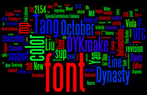

For whatever reason, you've found your way to Andrew Famiglietti's entirely modest web presence
I am currently a Visiting Assistant Professor of Communication Studies at St. Joseph's University in Philadelphia. My teaching focuses on helping students understand the historical context, technological affordances, and political implications of digital communications technology. Click the teaching tab above for more about my teaching philosophy, classes and sample assignments.
Current students can find their class website/syllabus by clicking the "classes" link below. They may also find the link below to my current contact information, including office hours, useful.
You can follow along with far-too-frequent 140 character bon mots by following @afamiglietti on twitter.
My research focuses on the ways digital systems of production, and the cultures that have emerged alongside these systems, are changing the way we create and structure knowledge and creativity. I am especially interested in the culture, history, and political economy of Wikipedia, the phenomenon of Free and Open Source Software, and related experiments with commons-based information production. Select publications on the subject can be found under "publications" below, as well as my complete CV. For recent thoughts and other updates, check out the blog.
Keeping with the "hack not yack" creedo of Free Software, I also sometimes build stuff. I am a member of the development team working on Marca, an open-source web based tool for writing instruction. I also have a variety of other small projects, including Ape-Wits my Wikipedia traffic monitor, listed under "projects" below.